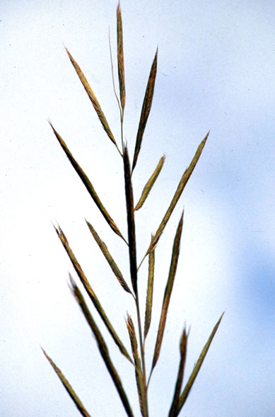
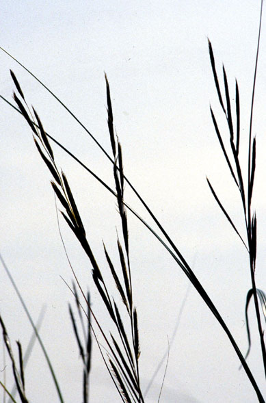
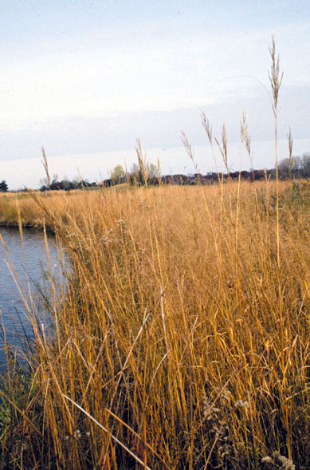
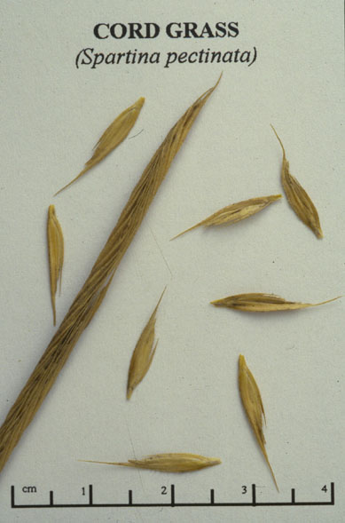

Spartina Pectinata
Family: Poaceae
Prairie Cord Grass
Swink/Wilhelm #4



Click to view larger photo
FLOWERING: July - August
SEED TIMING: Late October into November
HABITAT: Wet to wet mesic prairie. Marshes and shores
DIAGNOSTIC FEATURES: Up to 7 - 8 feet high. Sod forming grass, erect and reed-like with very long leaf blades. Leaf blades have a prominent mid-vein and finely serrated margins that are very sharp. Showy yellow anthers protrude from the comb-like blooming florets.
TO PICK: Cord Grass turns golden yellow in fall. Seed spikes are narrow, dense, up to 2 and 1/4 inches long and hug the stem. It is easiest to pick the entire spike rather than strip the seed. Be careful of sharp edged leaves which cut skin easily.